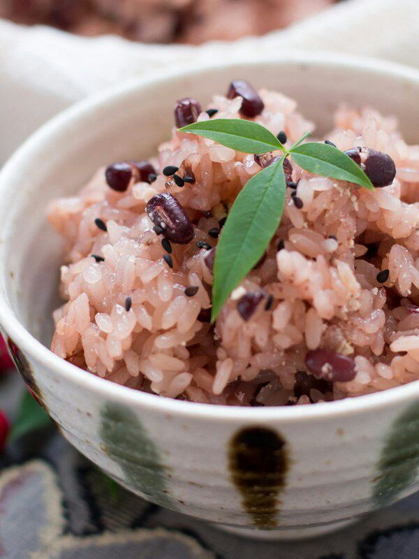

Food´s
Hagalo usted mismo
Favoritos

Salmón ahumado
20 de Enero de 2019
El salmón ahumado es una delicia que conviene tener a mano en la cocina de cara a las grandes celebraciones en torno a la mesa. Su inconfundible sabor y su delicada textura ha viajado desde sus orígenes en el norte de Europa hasta nuestra mesa, para integrarse en todo tipo de recetas con salmón ahumado, en combinación con todo tipo de alimentos y preparaciones. En canapés, ensaladas, pastas, cremas, brochetas, rollitos, hojaldre,… Las posibilidades de incluir el salmón ahumado en nuestra cocina son muy amplias y el resultado siempre es digno de cualquier gran ocasión.
Mónica Es una gran receta
Juan Como se prepara?
Camarones al curry
5 de Enero de 2019
Prepara un delicioso curry con camarones casero. ¡Es más fácil de lo que crees!
- En un sartén, añade la mantequilla y cocina la cebolla, la manzana, el apio y el polvo de curry.
- 2. A la preparación anterior, añade la harina y poco a poco agrega el litro de agua y la crema. Sazona con sal y pimienta al gusto.
- 3. Cuando esté espesa la salsa agrega los camarones.
Mónica Es una gran receta
Juan Como se prepara?